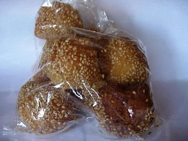
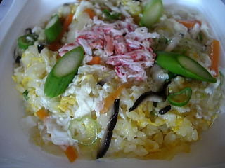

遊々亭のゴマドーナッツっぽいもの
2008/05/06
桃源郷に行ったら販売してました。 商品名は忘れちゃいました。ゴマがかたったドーナッツです。

ゴマが沢山付いてるだけあってごま味が強かったです。 ドーナッツなので甘いお菓子かなと想像していたんですが、そんなに砂糖が入ってないみたいだし、生地の味が濃いわけでもないので、ごま味を堪能しました。
島根県出雲市下古志町656
閉店しました。
2008/05/06
桃源郷に行ったら販売してました。 商品名は忘れちゃいました。ゴマがかたったドーナッツです。

ゴマが沢山付いてるだけあってごま味が強かったです。 ドーナッツなので甘いお菓子かなと想像していたんですが、そんなに砂糖が入ってないみたいだし、生地の味が濃いわけでもないので、ごま味を堪能しました。
2008/05/06
桃源郷に行ったら販売してました。あんかけかにチャーハンですね。

お弁当なので、作ってから時間もたってるし、あんが掛かってるので、チャーハンが湿ってないか不安でしたが、大丈夫でした。
玉子のふんわりとした味がよくわかる、あっさりめのチャーハンでした。
気軽に中華料理屋さんの味が楽しめていいですね。これを参考にして次そのお店に行くかどうか決めれるのって失敗が少なくていいです。